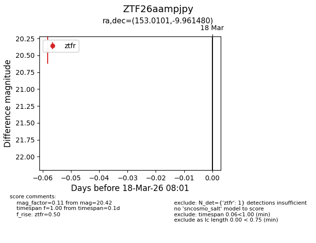
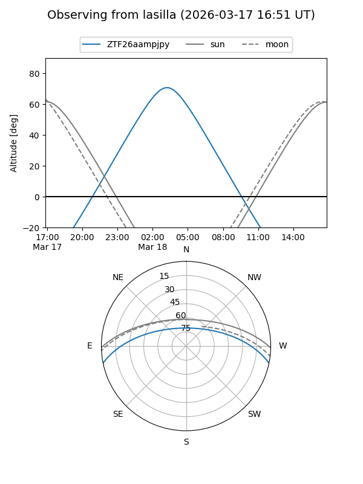
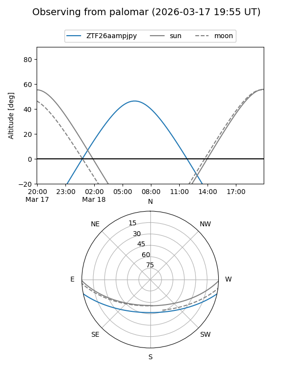

ZTF26aampjpy
Target ZTF26aampjpy at 2026-03-18 08:03
Aliases and brokers:
FINK: link
Lasair: link
ALeRCE: link
alt names
ZTF26aampjpy (ztf,fink_ztf)
Coordinates:
equatorial (ra, dec) = 153.0101,-9.96148
equatorial (HMS+DMS) = 10:12:02.41,-09:57:41.33
galactic (l, b) = (251.2503,+36.44792)
Flags:
Photometry:
last ztfr=20.42
1 ztfr detections
Lightcurve

Visibility


Additional plots